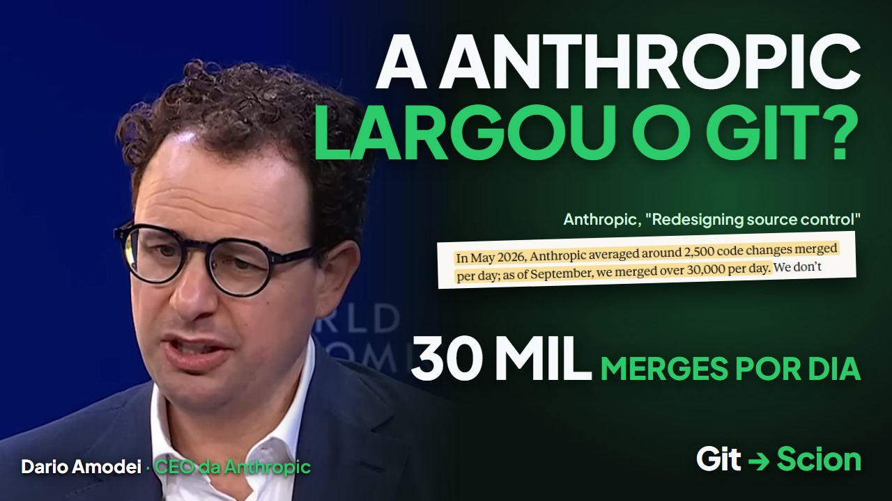
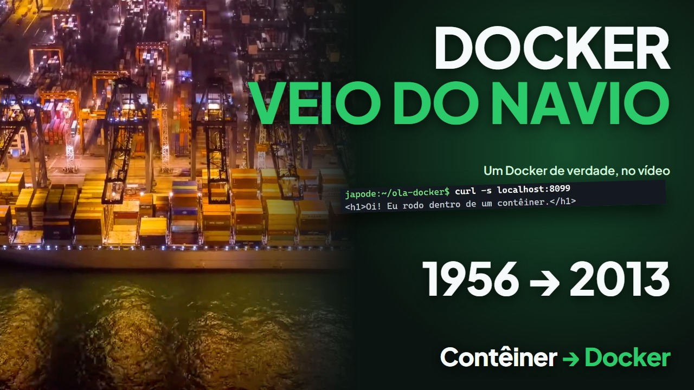

Vídeos curtos e artigos em português sobre a história e o porquê das ferramentas que desenvolvedores usam todo dia, contados a partir de fontes reais.

Assistir · 5:15Controle de versão · mais recente
A IA escreve tanto código que a Anthropic precisou ir além do Git
Em maio eram cerca de 2.500 merges por dia no repositório principal da Anthropic. Quatro meses depois, mais de 30 mil. O que quebrou no Git, o que eles construíram no lugar e o que isso muda para o seu.
Por Alexandre Oliveira · 11 nov 2026 · leitura de 5 min
Todos os vídeos
2 vídeos · mais recente primeiro
Contêineres Docker: a caixa que mudou o software 10 nov 2026 · 4:32O que cada página traz
O vídeo
Com os capítulos, para pular direto ao trecho que interessa.
O texto
Escrito a partir do vídeo. Não afirma nada que não esteja nele ou nas fontes.
As fontes
Cada número aponta para o documento de onde saiu, com data e link.
Os créditos
Toda imagem de terceiros, com canal, link e licença.
Termos explicados nos vídeos
Cada termo leva ao vídeo que o explica.